Part 0: Calibrating Your Camera and Capturing a 3D Scan
To create a NeRF, we need a 3D scan of our object. To obtain this, we also need to recover camera intrinsics and distortion coefficients.
To this end, we used cv2.calibrateCamera on our calibration data and ArUco tags.
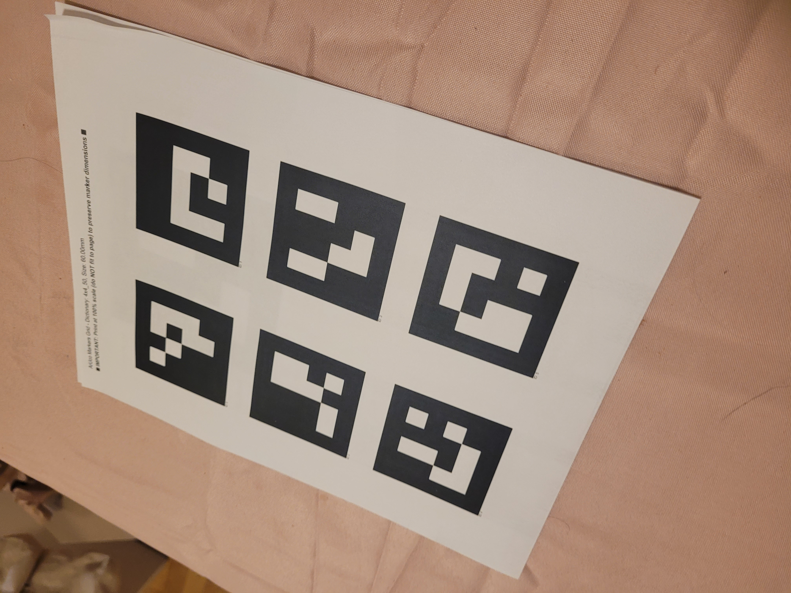
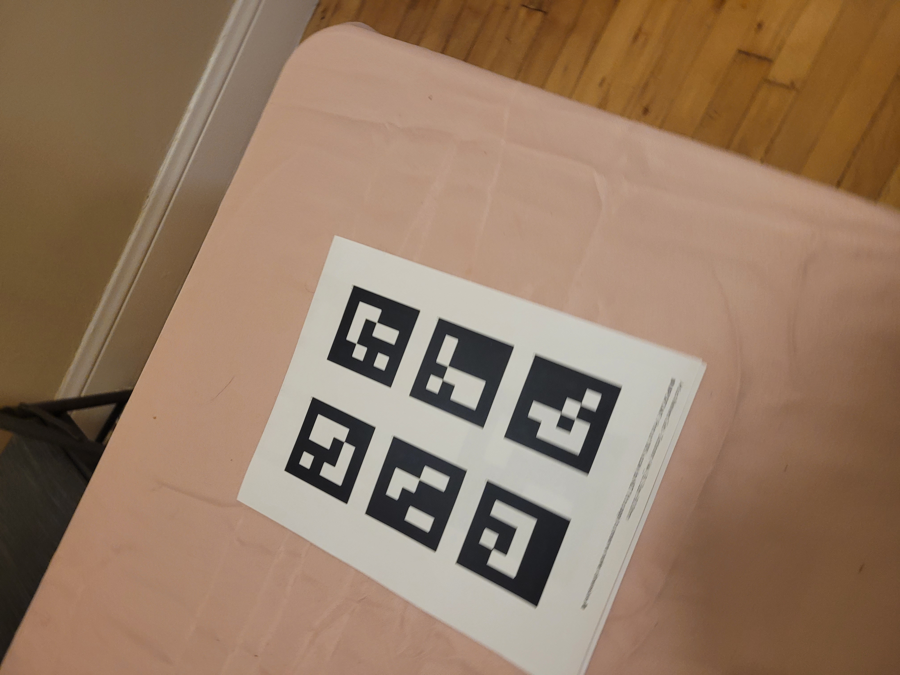
Once we've recovered camera intrinsics, we can create a 3D scan of our object and recover the camera extrinsics. For this part, we again used ArUco tags to help us calibrate between 3D space and camera space.
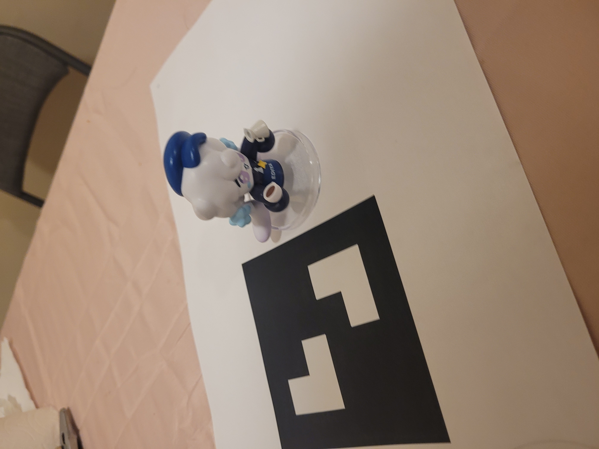
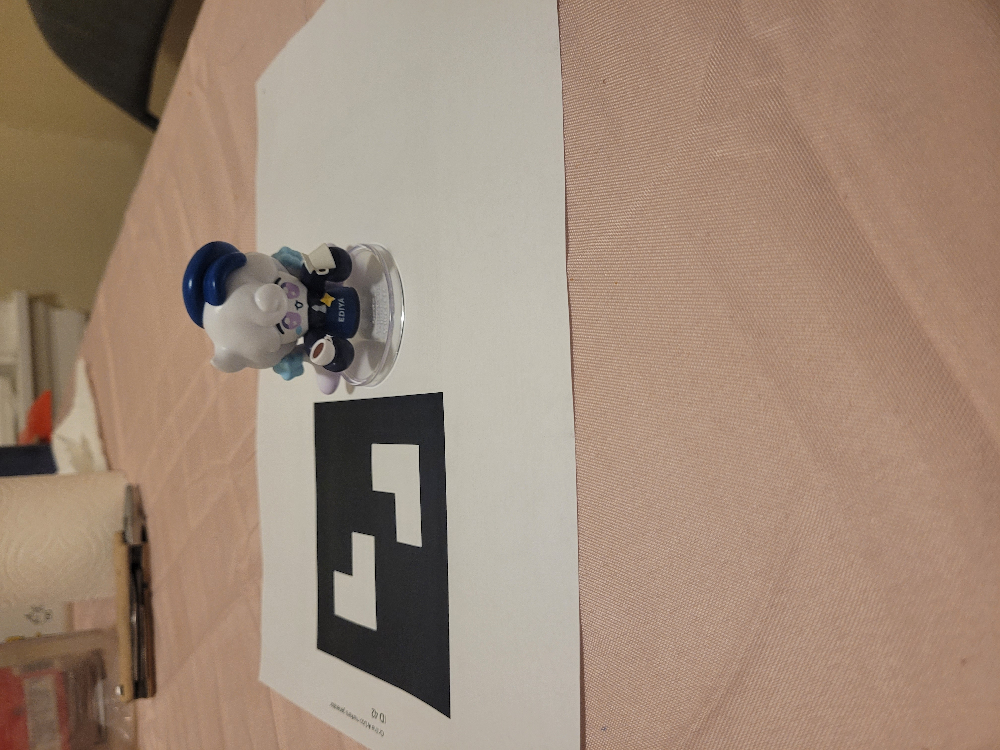
We can then visualize our camera frustums using Viser.
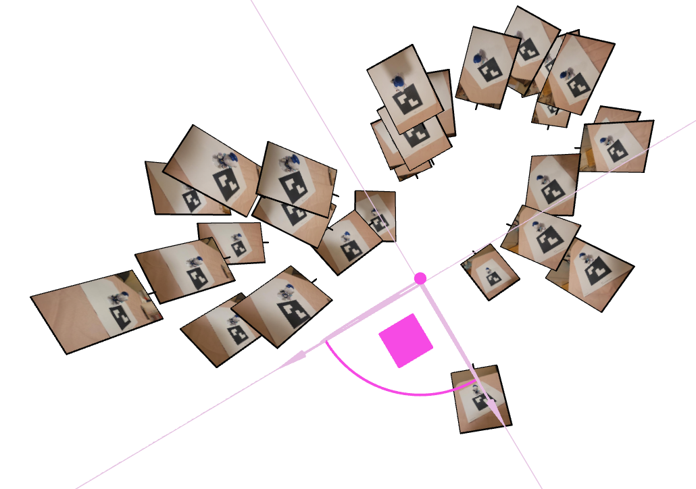
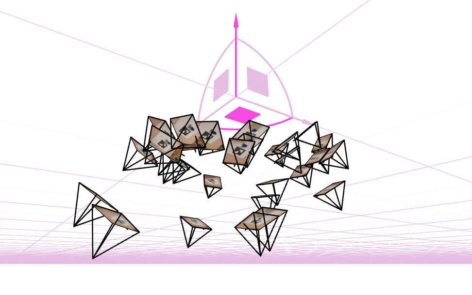
Part 1: Fit a Neural Field to a 2D Images
Before we jump into 3D, we decided to try a Neural Field in 2D! The Neural Feild would convert \(\{u,v\}\rightarrow \{r,g,b\}\) using the following architecture:

Where SE is the sinusoidal positional encoding given by \[PE(x) = \{x, sin(2^0\pi x), cos(2^0\pi x), sin(2^1\pi x), cos(2^1\pi x), ..., sin(2^{L-1}\pi x), cos(2^{L-1}\pi x)\}\] Because we expose hyperparameters, we can use any arbitrary hidden layer width and L. For my purpose, I used 4 layers with a hidden layer width of 256 (and 32 later) and L=10 (and 5 later). I trained using Adam with a learning rate of 0.01 and used mean squared error as the loss function.
Training Results
(hidden layer width = 32, L = 10)
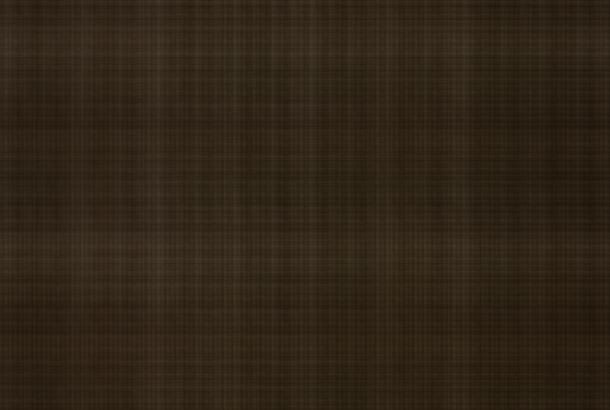
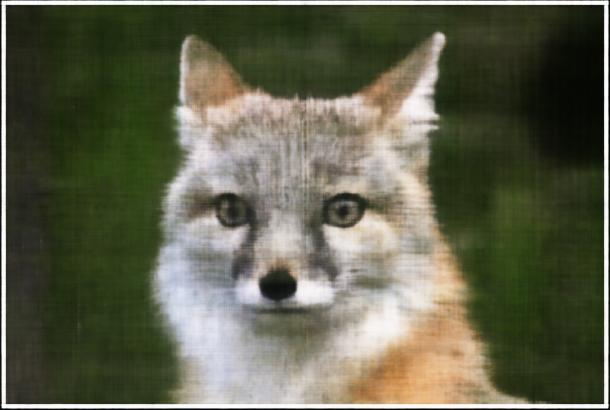
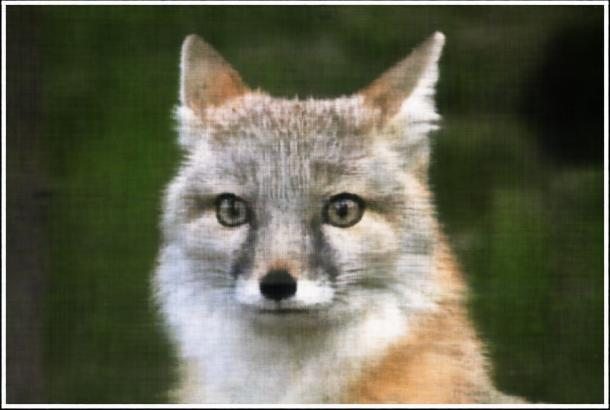
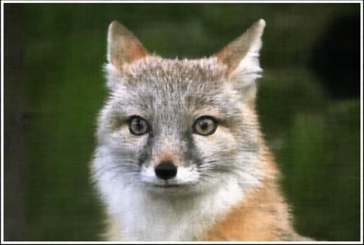
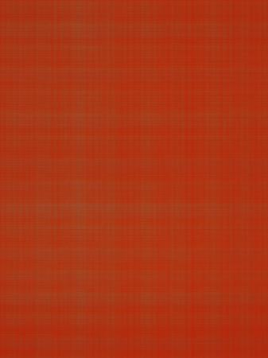
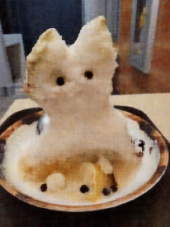
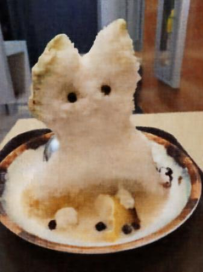
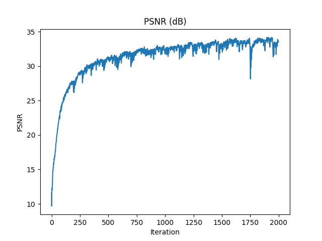
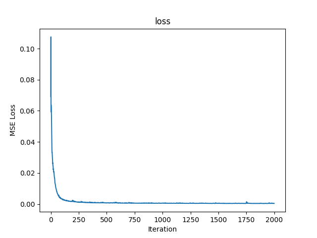
We also tried different hyperparameters
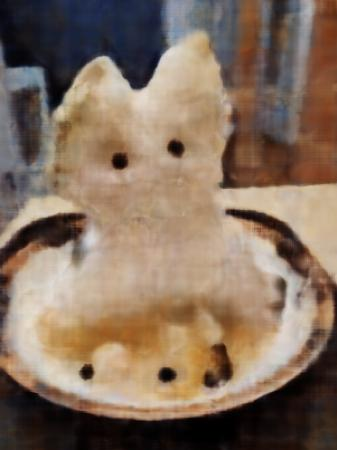
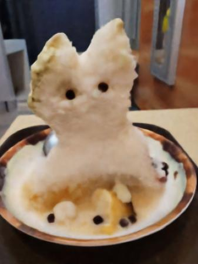
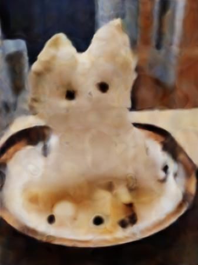
Part 2: Fit a Neural Radiance Field from Multi-view Images
Helper functions
Now that we've done 2D radiance fields, we can move on to 3D neural radiance fields. To do this, we need to sample rays from our cameras. We created a couple helper functions to implement this. First, we needed a function to convert camera coordinates to world coordinates. Since we already have the c2w matrix, we simply just multiply that by the homogenous camera coordinates. We then implemented a function to convert pixel coordinates to camera coordinates. To do this, we used the following formula: \[\begin{align} \begin{bmatrix} x_c \\ y_c \\ z_c \end{bmatrix} = \mathbf{K}^{-1} s \begin{bmatrix} u \\ v \\ 1 \end{bmatrix} \end{align} \] Where K is the intrinsic matrix, and s is the depth of the point along the optical axis. Using the above functions, we implemented a pixel to ray function that takes the u and v coordinate of the pixel, passes it into the pixel to camera function with s=1 to obtain the camera coordinates. Then we pass the camera coordinates to our camera to world coordinate function to get the world coordinates. We use these coordinates to calculate the ray direction. The ray origin is given by the c2w matrix \[\begin{bmatrix} \mathbf{R}_{3\times3} & \mathbf{t} \\ \mathbf{0}_{1\times3} & 1 \end{bmatrix}\] where t is the ray origin. Using the ray origin and the world coordinates (Xw) from earlier we calculate the ray direction as follows \[\begin{align} \mathbf{r}_d = \frac{\mathbf{X_w} - \mathbf{r}_o}{||\mathbf{X_w} -\mathbf{r}_o||} \end{align}\] Our function then outputs both the ray origins and directions
Sampling
Now we must sample rays from our images, just as we sampled pixels in part 1.
To do this, we flatten all pixels on all images and sample N rays globally. We randomly
select N uv coordinates and then use our previous helper functions to get the ray origin and
direction. We also obtain the pixel value at the uv coordinate and return that as well.
After getting the rays, we need to discretize them into samples in 3D space. To do this, we first
uniformly sample n_samples linearly between values near and far.
We then perturb these values by a random amount up to the bin size to avoid overfitting.
These random sampled values will be called t
We then calculate the final coordinates by the following:
\[\mathbf{x} = \mathbf{R}_o + \mathbf{R}_d * t\]
Below we show some of the sampled rays for one of our NeRFs.
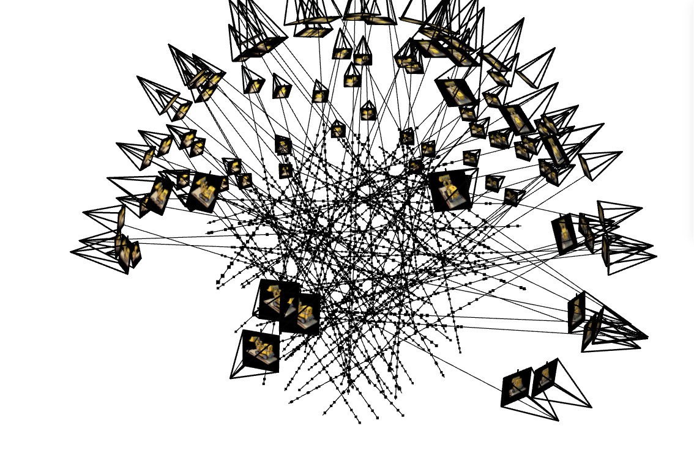
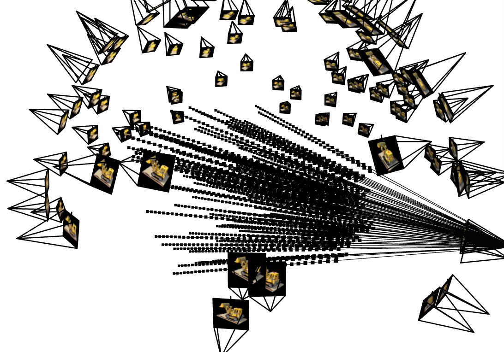
Neural Net
For the NeRF we created a MLP given by the architecture shown below.
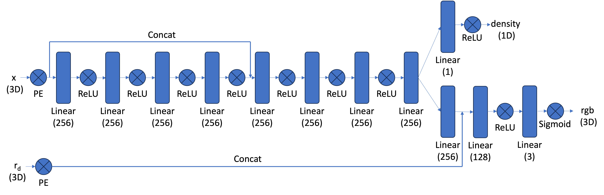
Exposing L_dir, L_coord, N_hidden_layers and hidden_layer_size as hyperparameters.
We set the default values to match the image above with L_dir=4 and L_coord=10.
Volume rendering
To actually render an image, we need to use volume rendering. The core volume rendering equation is as follows \[\begin{align} C(\mathbf{r})=\int_{t_n}^{t_f} T(t) \sigma(\mathbf{r}(t)) \mathbf{c}(\mathbf{r}(t), \mathbf{d}) d t, \text { where } T(t)=\exp \left(-\int_{t_n}^t \sigma(\mathbf{r}(s)) d s\right) \end{align}\] As we are computer scientists who know not of what continuous is supposed to mean, we use the discrete approximation \[\begin{align}\hat{C}(\mathbf{r})=\sum_{i=1}^N T_i\left(1-\exp \left(-\sigma_i \delta_i\right)\right) \mathbf{c}_i, \text { where } T_i=\exp \left(-\sum_{j=1}^{i-1} \sigma_j \delta_j\right) \end{align}\] where \(c_i\) is the color obtained from our network at sample location \(i\), \(T_i\) is the probability of a ray not terminating before sample location \(i\), and \(1-e^{-\sigma_i\delta_i}\) is the probability of terminating at sample location \(i\).
Results
Below you may find the results of the NeRF on the Lego scene from the original NeRF paper.
We used parameters
L_coord=10, L_dir=4, N_hidden_layers=8, hidden_layer_size=256, batch_size=2048, N_iter=3600, ray_samps=64, near=2, far=6
.
We used MSE as the loss function and the Adam optimizer with a learning rate of 5e-4
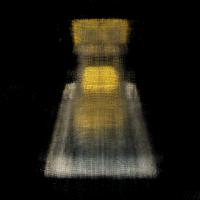
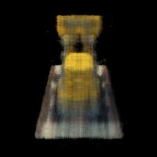
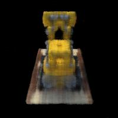
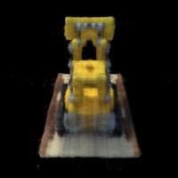
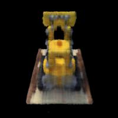
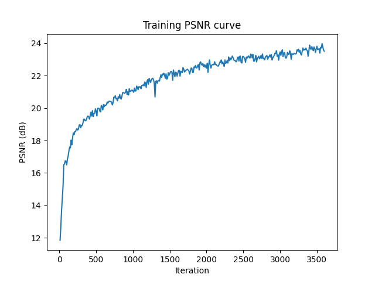
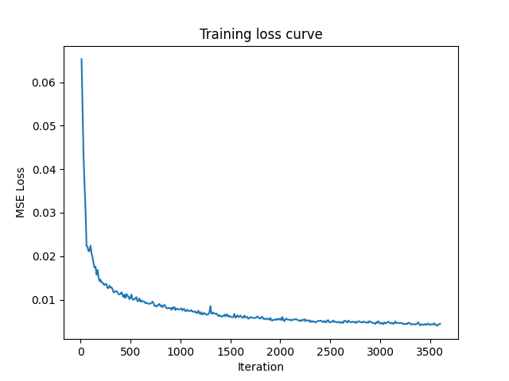
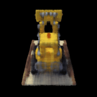
Part 2.6: Training with Your Own Data
We also tried training on our own custom dataset. We use parameters
L_coord=10, L_dir=4, N_hidden_layers=8, hidden_layer_size=256, batch_size=4096, N_iter=3600, ray_samps=64, near=0.04, far=0.5
.
We used MSE as the loss function and the Adam optimizer with a learning rate of 1e-3
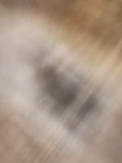
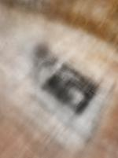
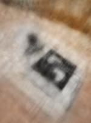
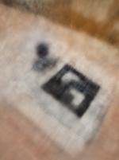
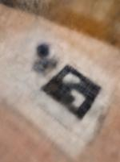
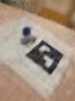
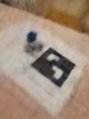
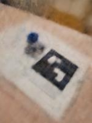
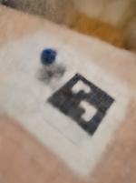
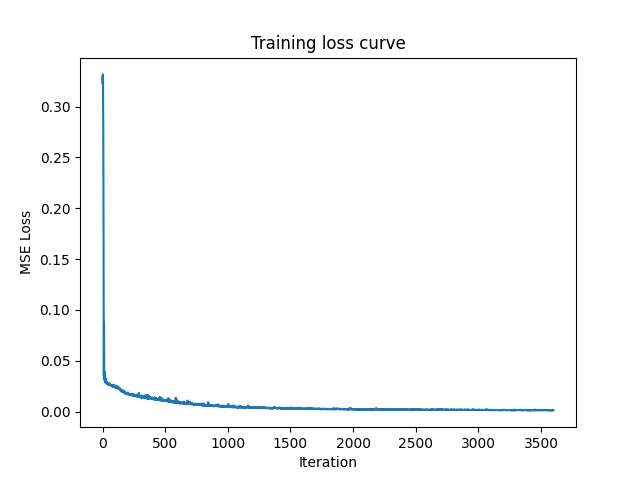
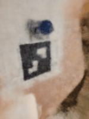
As you can see, the custom dataset does not seem to fit well (overfitted?), as extrinsics very close to the training set are fit well, but small deviations are not generated properly.